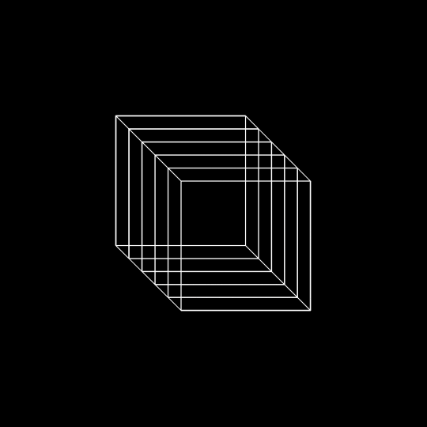

Hi, I'm Mark Joseph Javiña
Information Technologist & IT Professional
IT professional from Quezon City, specializing in citywide network monitoring, ISP dispatch management, IT asset inventory, and technical support operations.

Reliable IT support, paired with clean, modern web design.
I'm an Information Technologist from Batasan Hills, Quezon City, currently serving under the Network and Technical Maintenance Division (NTMD) of the Quezon City Government. My day-to-day work covers citywide network monitoring, ISP dispatch management, IT asset inventory, and technical support operations, where accuracy, documentation, and dependability matter.
Alongside my IT career, I'm a passionate Web Designer. I enjoy crafting clean, modern, and user-friendly websites with thoughtful UI/UX, responsive layouts, and polished visual themes that look great on every screen. Combining technical know-how with a designer's eye lets me build experiences that are not only functional, but also intuitive and visually refined.
Work & expertise
Select any section below to explore the full details.
Current Employment
Information Technologist
Technical Support Staff · ITDD – NTMD, Quezon City Government
Information Technologist
Technical Support Staff · ITDD – NTMD, Quezon City Government
Position Details
5th Floor Quezon City Hall Main Building, Mayaman St, Brgy. Central Diliman, QC
Open in Google MapsCore Responsibilities
-
Network & ISP Helpdesk MonitoringPLDT Globe Radius Smart Converge
-
Hardware, Software & Network Diagnostics (Resolving technical faults and system issues)
- IT Asset Management (hardware registries, repair logs)
- PC Support Assistance
Previous Internship / OJT
OJT Trainee
SETC Computer Parts and Accessories Trading · 600 hours
OJT Trainee
SETC Computer Parts and Accessories Trading · 600 hours
Internship Details
SETC Computer Center, Lucena City, Quezon
Open in Google Maps
Capabilities
Skills & Expertise
Network monitoring, ISP escalation, hardware troubleshooting, asset inventory, technical documentation, and web design
Skills & Expertise
Network monitoring, ISP escalation, hardware troubleshooting, asset inventory, technical documentation, and web design
A blend of hands-on technical support, well-documented operations, and clean, modern web design.
Academic foundation
Formal education and professional training behind my technical skills.
Academic & Professional
Education & Certifications
BS Information Technology, Secondary Education, and Google Cloud Platform Training
Education & Certifications
BS Information Technology, Secondary Education, and Google Cloud Platform Training
Education
Secondary Education (TVL Track)
Lutucan Integrated National High School
2016 – 2022Certifications
Google Cloud Platform Training
Certificate of training completion
November 4, 2026Google Cloud Platform Training
The certificate image could not be loaded. Place the file below in the same folder as index.html:
gcp-cert.jpg.png